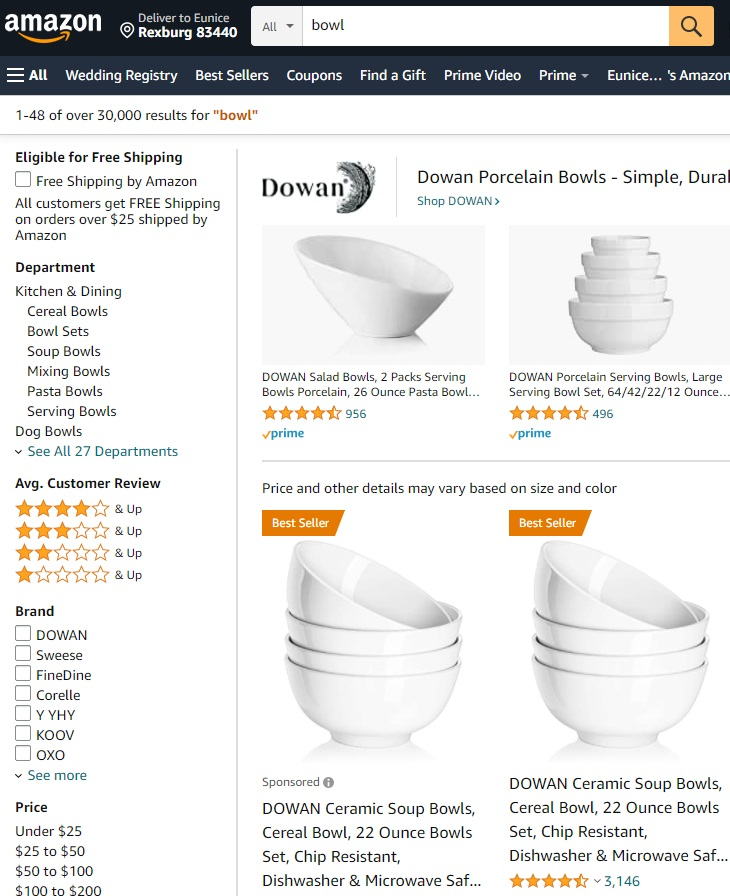

Design Principles
Wix:
Visual Hierarchy
Hierarchy is a visual design principle which designers use to show the importance of each page/screen’s contents by manipulating these characteristics:
- Size – Users notice larger elements more easily.
- Color – Bright colors typically attract more attention than muted ones.
- Contrast – Dramatically contrasted colors are more eye-catching.
- Alignment – Out-of-alignment elements stand out over aligned ones.
- Repetition – Repeating styles can suggest content is related.
- Proximity – Closely placed elements seem related.
- Whitespace – More space around elements draws the eye towards them.
- Texture and Style – Richer textures stand out over flat ones.
Amazon:
Hick’s Law
Hick’s Law guides UX designers to create effortless user experiences. Here’s how to apply the law to your UX design.
Hick’s Law states that the more choices a person is given, the longer a person will take to reach a decision. Suddenly all that bread seems daunting.
there’s a formula for that relationship:
RT = a + b log2 (n)
Don’t fret. This formula is simple when you get your head around it. RT is just the reaction time, “a” is the total time that is not involved with decision making, “b” is an empirically derived constant based on the cognitive process time for each option, which for humans is 0.155 and (n) is the number of alternative stimuli.
Made:
White Space and Clean Design
White space or negative space is simply unmarked space in the design. It is the space between the layouts, lines of paragraphs, between paragraphs, between different UI elements and so on.
“White Space in design composition is same as use of Silence in a musical composition. Without proportionate use of Silence, music is unstructured; some may call it noise. Similarly, without White Space, design is unstructured and difficult to consume”
When used well it can transform not only the design but also the business for which the design is made. While aesthetics is one of the benefits, others revolve around tangible impacts on the effectiveness of the page. In other words, white space significantly boosts not only UI(User Interface) but also UX(User Experience) of the page.